기계조립산업기사 (2003-05-25 기출문제)
1과목: 기계가공법 및 안전관리
1. 절삭공구가 가져야 할 기계적 성질은?
- 강인성, 내마모성, 고온경도
- 충격성, 담금성, 내열성
- 경도성, 강도성, 인장성
- 경도성, 강도성, 고온취성
(정답률: 알수없음)

2. 리드(lead)9㎜ 인 3중 나사를 1/3 회전 시켰을 때 이동량은 얼마인가?
- 18㎜
- 9㎜
- 3㎜
- 0.9㎜
(정답률: 알수없음)
3. 바이트의 끝모양과 이송이 표면 거칠기에 미치는 영향중 다듬질 표면 거칠기의 이론 값(Hmax)을 구하는 공식은 다음 중 어느 것인가? (단, r= 바이트 끝반지름, s= 이송거리 일때)
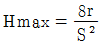
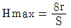
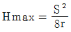
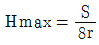
(정답률: 알수없음)
4. 선반에서 지름 102 mm 인 환봉을 300 rpm 으로 가공할 때 절삭 저항력이 100 kgf이었다. 이때 선반의 절삭효율을 75% 라 하면 절삭 동력은?
- 약 1.4 KW
- 약 2.1 KW
- 약 3.6 KW
- 약 5.4 KW
(정답률: 알수없음)
5. 절삭제의 사용목적을 설명한 것 중 틀리는 것은?
- 절삭공구의 냉각으로 공구의 경도 저하를 막는다.
- 칩의 제거작용을 용이하게하여 절삭 작업을 한다.
- 공구와 일감의 접촉면의 윤활로 공구마모를 적게하고 가공표면을 좋게 한다.
- 공구와 가공물의 친화력 향상으로 정밀도를 높게한다.
(정답률: 알수없음)
6. 선반에서 가로 이송대에 8mm 의 리드로서 100등분 눈금의 핸들이 달려 있을 때, 지름 34 mm 의 둥근막대를 30 mm로 절삭하려면 핸들의 눈금을 몇 눈금 돌리면 될까?
- 20
- 25
- 40
- 50
(정답률: 알수없음)
7. 선반 베드의 재질은 어느 것이 가장 적합한가?
- 고급주철
- 탄소 공구강
- 연강
- 초경합금
(정답률: 알수없음)
8. 다음 그림과 같은 플레인 밀링커터에서 β 가 나타내는 각은?
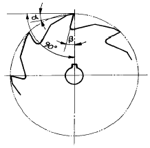
- 레이디얼여유각
- 레이디얼경사각
- 엑시얼여유각
- 엑시얼경사각
(정답률: 알수없음)
9. 밀링머신에서 얇은 금속을 자르는 커터는?
- 총형 커터
- 메탈소 커터
- 앵글 커터
- 플라이 커터
(정답률: 알수없음)
10. 센터리스 연삭의 장점이 아닌 것은?
- 연삭 여유가 작아도 된다.
- 센터 구멍이 필요하다.
- 가늘고 긴 공작물의 연삭에 적합하다.
- 연삭에 숙련을 요하지 않는다.
(정답률: 알수없음)
11. 드릴에 관한 사항 중 틀린 것은?
- 비틀림 홈 드릴에 길이 방향의 여유각은 일감과 드릴의 마찰을 적게 하기 위하여 만들어졌다.
- 날끝의 여유각이 클수록 잘 깎이나 부러지기 쉽다.
- 드릴의 비틀림 홈은 절삭유를 충분히 공급하기 위하여 만들어져 있는 것이다.
- 드릴의 날끝각은 단단한 재료에는 크게하고, 연한 재료는 작게 한다.
(정답률: 알수없음)
12. 암나사의 호칭치수는?
- 암나사의 최소지름
- 암나사의 유효지름
- 암나사와 맞는 숫나사의 바깥지름
- 숫나사의 유효지름
(정답률: 알수없음)
13. 선반에서 보링 작업을 할때의 사항 중 옳은 것은?
- 회전중에도 측정기로 측정한다.
- 보링중에 손가락을 구멍에 넣지 않도록 한다.
- 보링 바이트의 길이를 될수록 길게 고정한다.
- 회전 중 걸레로 칩을 제거한다.
(정답률: 알수없음)
14. 드릴 작업시 주의할 점이다. 틀린 것은?
- 작업복을 입고 작업한다.
- 작은 일감은 손으로 붙잡고 작업한다.
- 일감은 정확히 고정한다.
- 장갑을 사용하지 말아야 한다.
(정답률: 알수없음)
15. 신호등의 "주의" 표시색광과 건널목에서 열차의 진행방향을 표시하는 KS규격의 안전색광은?
- 노랑
- 녹색
- 남색
- 빨강
(정답률: 알수없음)
16. 밀링가공 작업중에 갑자기 정전되었을 때, 안전사항으로 가장 거리가 먼 것은?
- 절삭공구는 공작물에서 떼어 놓는다.
- 기계에 부착된 스위치를 즉시 끈다.
- 경우에 따라 메인(main) 스위치도 끈다.
- 측정기를 정리하고 청소한다.
(정답률: 알수없음)
17. 니이형 밀링머시인에서 호칭번호 0번의 테이블 이동거리(좌우x전후x상하)로 다음 중 옳은 것은?
- 700x250x450
- 550x200x400
- 450x150x300
- 300x100x150
(정답률: 알수없음)
18. 새로운 연삭입자를 노출시키는 작업을 무엇이라 하는가?
- 드레싱(dressing)
- 롤링(rolling)
- 글레이징(glazing)
- 로우딩(loading)
(정답률: 알수없음)
19. 연삭 숫돌차의 3가지 구성 요소에 해당 되지 않는 것은?
- 숫돌입자
- 기공
- 형상과치수
- 결합제
(정답률: 알수없음)
20. 연삭숫돌에서 WA46H8V에서 WA가 나타내는 것은?
- 입도
- 결합도
- 입자
- 결합제
(정답률: 알수없음)
2과목: 기계설계 및 기계재료
21. 급속귀환 운동을 하는 공작기계가 아닌 것은?
- 센터리스연삭기
- 플레이너
- 슬로터
- 세이퍼
(정답률: 알수없음)
22. 창성법에 의한 기어절삭 방법에 해당되는 것은?
- 형판에 의한 기어가공
- 총형 바이트에 의한 기어가공
- 호브에 의한 기어가공
- 브로칭에 의한 기어가공
(정답률: 알수없음)
23. 일반 수공구에 관한 안전사항으로 틀린 것은?
- 용도 이외의 다른 목적으로 사용하지 않는다.
- 공구는 항상 일정한 장소에 비치한다.
- 수공구는 절대로 무리하게 사용하지 않는다.
- -자 드라이버의 날끝은 둥글게 된 것을 사용한다.
(정답률: 알수없음)
24. 선반 작업용 부속품에 해당되지 않는 것은?
- 돌림판
- 돌리개
- 브로치
- 맨드릴
(정답률: 알수없음)
25. 측정자의 기계적인 변위를 전기량으로 변환하여 길이를 측정하는 측정기는 어떤 것인가?
- 공기 마이크로미터
- 인디케이팅 마이크로미터
- 전기 마이크로미터
- 열전대형 마이크로미터
(정답률: 알수없음)
26. 직선의 금긋기 및 평면검사에 사용되는 강 및 주철제의 수공구는?
- 앵글 플레이트
- 스트레이트 에지
- 트러멜
- 수준기
(정답률: 알수없음)
27. 정보처리 기술과 제어기술을 공작기계와 결합하여 프로그래밍하여 제품을 가공하는 공작기계는?
- 전용 공작기계
- 단능 공작기계
- 수치제어 공작기계
- 범용 공작기계
(정답률: 알수없음)
28. 선반에서 직경 38mm의 연강을 절삭할 때 절삭속도가 28m/min라고 하면 스핀들의 회전수는 약 몇 rpm인가?
- 174
- 235
- 336
- 473
(정답률: 알수없음)
29. 일반적으로 호빙머신에서 절삭할 수 없는 기어는?
- 헬리컬기어
- 하이포이드기어
- 웜기어
- 스퍼기어
(정답률: 알수없음)
30. 래핑작업에서 사용하는 랩제의 종류가 아닌 것은?
- 탄화규소
- 산화알루미나
- 산화크롬
- 흑연분말
(정답률: 알수없음)
31. 입방체의 각 모서리와 면의 중심에 각각 1개씩의 원자가 있고 이 금속은 전성과 연성이 좋으며 Au, Ag 등이 속하는 결정 격자는?
- 체심입방격자
- 조밀육방격자
- 집합결정격자
- 면심입방격자
(정답률: 알수없음)
32. 축방향에 10톤의 압축하중을 받는 정사각형의 짧은 주철제 각봉에 생기는 응력을 4 kgf/mm2로 하려면 단면 1변의 길이는 몇 mm 인가?
- 5 mm
- 25 mm
- 50 mm
- 75 mm
(정답률: 알수없음)
33. 원뿔키이(cone key)에 관한 설명이 아닌 것은?
- 축에는 키이홈을 파고, 보스에는 키이홈을 파지 않는다.
- 마찰만으로 밀착시키는 키이이다.
- 바퀴가 편심되지 않는다.
- 축의 어느 위치에나 설치할 수 있다.
(정답률: 알수없음)
34. 브레이크장치에서 브레이크드럼의 원주상에 1개 또는 2개의 브레이크블록을 브레이크레버로 누름으로써 그 마찰에 의하여 제동하는 것은?
- 밴드브레이크
- 블록브레이크
- 자동브레이크
- 전자브레이크
(정답률: 알수없음)
35. 인장 원통 코일스프링에 50kgf의 하중을 걸어 40㎜의 늘어남이 있었다면 이 스프링의 스프링 상수는 얼마 정도이겠는가?
- 0.08kgf/㎝
- 12.5kgf/㎝
- 1.25kgf/㎝
- 20.5kgf/㎝
(정답률: 알수없음)
36. 콕(cock)은 유체를 직선상으로 흐르게 한다. 몇 회전 시키면 통로가 완전히 열렸다, 닫혔다 하는가?
- 1/2 회전
- 1/3 회전
- 1/4 회전
- 1 회전
(정답률: 알수없음)
37. 다음은 강에 요구되는 내열성에 대한 설명이다. 해당되지 않는 것은?
- 고온도의 가스에 의한 산화, 침식에 견디는 것
- 조직이 안정되어 있어 온도의 급변에 견디는 것
- 고온도가 되어도 외력에 의해서 변형하지 않는 것
- 적은 반복응력이 장시간 작용하면 피로가 오는 것
(정답률: 알수없음)
38. 특수강 중에서 물이나 기름에 냉각시키지 않고 공기 중에 냉각해도 경화되는 성질을 가진 것이다. 해당 없는 것은?
- 니켈(Ni)강
- 크롬(Cr)강
- 규소(Si)강
- 망간(Mn)강
(정답률: 알수없음)
39. B스케일과 C스케일이 있어 연한 재료나 단단한 재료를 다같이 시험할 수 있는 경도 시험기는?
- 로크웰 시험기
- 브리넬 시험기
- 비커스 시험기
- 쇼어 시험기
(정답률: 알수없음)
40. 황동(Cu:60%, Zn:40%)에 약간의 철을 섞어 강인성과 내식성을 증가시켜 광산, 선박, 화학용 기계부품의 재료로 쓰이는 것은?
- 강력 황동
- 네이벌 황동(naval brass)
- 애드미럴티 메탈(admiralty metal)
- 델타 메탈(delta metal)
(정답률: 알수없음)
3과목: 기계제도 및 CNC 공작법
41. 표준 스퍼 기어(spur gear)에서 보통이의 경우 총이높이는 어느 것인가? (단, a = 이끝높이, d = 이뿌리 높이, c = 이끝틈새, m = 모듈이다.)
- a + d - c
- 2m + c
- a + m - c
- 2m - c
(정답률: 알수없음)
42. 알루미늄 청동은 황동 또는 청동에 비하여 기계적성질, 내식성, 내열성, 내마모성 등이 우수한 것으로서 알루미늄을 몇 % 이하로 첨가한 것인가?
- 12
- 22
- 25
- 30
(정답률: 알수없음)
43. 40 mm x 50 mm 크기의 직사각형 제품을 1/2 척도로 제도하면 도면 상에 그려진 면적은 몇 mm2 인가?
- 500
- 1000
- 2000
- 4000
(정답률: 알수없음)
44. 기계가공 부품도면에서 표면처리 부분을 나타내는 선은?
- 굵은 실선
- 가는 실선
- 굵은 일점 쇄선
- 가는 일점 쇄선
(정답률: 알수없음)
45. 다음 중 가는 실선으로 사용하지 않는 선은?
- 지시선
- 치수선
- 해칭선
- 피치선
(정답률: 알수없음)
46. 다음 중 h6 축에 가장 헐겁게 끼워 맞추어지는 구멍 공차인 것은?
- H7
- K7
- G7
- F7
(정답률: 알수없음)
47. 다음 중 기하 공차에서 돌출 공차역을 나타내는 기호는?
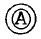
(정답률: 알수없음)
48. 다음 같은 표면의 상태를 기호로 표시하기 위한 표면의결 표시 기호에서 d는 무엇을 표시하는가?
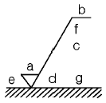
- a 에 대한 기준길이 또는 커트오프값
- 표면 거칠기의 구분치
- 가공 무늬의 모양기호
- 가공방법 기호
(정답률: 알수없음)
49. 보기 그림에서 해칭한 부분인 베어링의 명칭으로 가장 적합한 것은?
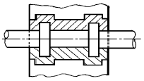
- 자동 조심 롤러 베어링
- 칼러 스러스트 베어링
- 스러스트 볼 베어링
- 레이디얼 베어링
(정답률: 알수없음)
50. 다음 그림과 같은 부품의 중량은 약 몇 그램 인가? (단, 부품의 재질의 단위 체적당 중량은 7.21ｇ/cm3이다)
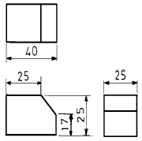
- 137.16ｇ
- 158.82ｇ
- 169.43ｇ
- 180.47ｇ
(정답률: 알수없음)
51. 그림과 같은 모양의 부품을 스케치하려고 한다. 가장 관계가 없는 용구는?
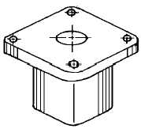
- 광명단
- 버어니어 캘리퍼스
- 반지름 게이지
- 틈새 게이지
(정답률: 알수없음)
52. 3각법으로 투상한 보기와 같은 정면도와 평면도에 가장 적합한 우측면도는?
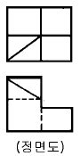
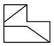
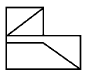
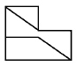
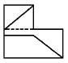
(정답률: 알수없음)
53. 보기 입체도의 화살표 방향이 정면일 경우 평면도로 가장 적합한 투상도는?
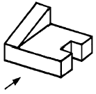
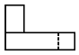
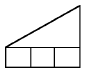
(정답률: 알수없음)
54. 보기와 같은 입체도를 제 3각법으로 투상할 때 가장 적합한 투상도는?
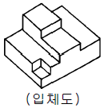
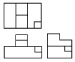
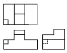
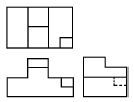
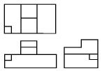
(정답률: 알수없음)
55. 직류 또는 교류에 모두 사용되는 전기계기의 종류가 아닌 것은?
- 열전형계기
- 정전형계기
- 전류력계형계기
- 가동코일형계기
(정답률: 알수없음)
56. 2.5Ω의 저항 10개를 직렬로 연결(R1)한 것과 병렬로 연결(R2)한 것과의 비 (R1/R2)는 어떻게 되는가?
- 1/50
- 1/100
- 50
- 100
(정답률: 알수없음)
57. 시퀀스제어에 사용하는 전자접촉기의 주접점을 표시하는 심벌은?
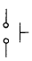
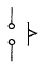
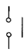
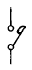
(정답률: 알수없음)
58. 피상전력이 100kVA, 유효전력이 60kW일 때 역률은?
- 0.6
- 0.8
- 0.9
- 1.0
(정답률: 알수없음)
59. 직류기의 3요소가 아닌 것은?
- 전기자
- 계자
- 브러쉬
- 정류자
(정답률: 알수없음)
60. 다음 설명 중 옳지 않은 것은?
- 인덕턴스를 직렬 연결하면 리액턴스가 커진다.
- 콘덴서를 직렬 연결하면 용량이 커진다.
- 저항을 병렬 연결하면 합성저항은 작아진다.
- 유도리액턴스는 주파수에 비례한다.
(정답률: 알수없음)